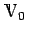
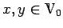
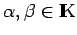
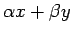
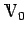
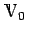
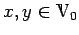
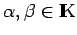
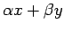
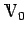

Inhalt Index DeskTop Bronstein

 Funktionalanalysis Vektorräume Lineare und affin-lineare Teilmengen
Funktionalanalysis Vektorräume Lineare und affin-lineare Teilmengen


Linearer Unterraum, lineare Mannigfaltigkeit oder linearer Teilraum eines Vektorraums  heißt eine nichtleere Teilmenge , wenn mit zwei beliebigen Elementen  und zwei beliebigen Skalaren  ihre Linearkombination  in  liegt. ist selbst wieder ein Vektorraum, genügt also den Axiomen (V1) bis (V8). Der Teilraum kann auch nur aus dem Nullelement bestehen, in diesem Falle heißt er trivial.
heißt eine nichtleere Teilmenge , wenn mit zwei beliebigen Elementen  und zwei beliebigen Skalaren  ihre Linearkombination  in  liegt. ist selbst wieder ein Vektorraum, genügt also den Axiomen (V1) bis (V8). Der Teilraum kann auch nur aus dem Nullelement bestehen, in diesem Falle heißt er trivial.